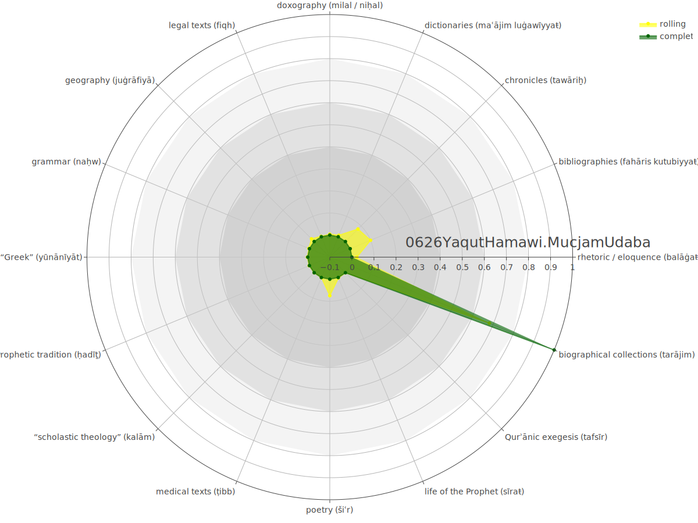

background-image: url(./images/bg_DOT2022.png) background-size: contain class: center, bottom ??? - Presentation @ DOT2022, at a panel organized with Till Grallert --- background-image: url(./images/bg_default_2021_eis.png) background-size: contain class: center, middle ### *COMPUTATIONAL CONTRIBUTIONS TO THE SOCIAL AND CULTURAL HISTORIES OF THE ISLAMICATE WORLD* ## Similarity-Based Networks<br> for Islamicate Digital Humanities Maxim Romanov, *Universität Hamburg* <br><maxim.romanov@uni-hamburg.de> #### \#DOT2022, 12 September 2022 ??? --- background-image: url(./images/bg_default_2021_eis.png) background-size: contain class: center, middle ### *COMPUTATIONAL CONTRIBUTIONS TO THE SOCIAL AND CULTURAL HISTORIES OF THE ISLAMICATE WORLD* ## Similarity-Based ~~Networks~~<br> for Islamicate Digital Humanities Maxim Romanov, *Universität Hamburg* <br><maxim.romanov@uni-hamburg.de> #### \#DOT2022, 12 September 2022 ??? --- background-image: url(./images/bg_default_2021_eis.png) background-size: contain class: center, middle ### *COMPUTATIONAL CONTRIBUTIONS TO THE SOCIAL AND CULTURAL HISTORIES OF THE ISLAMICATE WORLD* ## Similarity-Based Research<br> for Islamicate Digital Humanities Maxim Romanov, *Universität Hamburg* <br><maxim.romanov@uni-hamburg.de> #### \#DOT2022, 12 September 2022 ??? --- background-image: url(./images/bg_default_2021_white.png) background-size: contain class: middle ## The Digital Stage / Turn: - the quantitative shift leads to the qualitative change; - new ways of engaging with our data; - new research questions; - Analogy, the Print Stage / Turn: - common frame of reference for primary sources (al-Ṭabarī); - large pool of printed references; - after the print turn, one could no longer do research without printed materials, primary or secondary; ??? - Tabari's "History": --- background-image: url(./images/bg_default_2021_white.png) background-size: contain class: middle ## What is Digital Humanities? - DH current state: 3 poorly connected domains of: - digital objects; - metaobjects; - methods; - DH true function: - to facilitate the transition to the Digital Stage: - all three domains must be organically interconnected allowing for “Networks of Knowledge” which will open up new ways of engaging with our information; --- background-image: url(./images/vannevar_bush_mountain_of_research.jpg) background-size: contain ??? Mountain of research --- background-image: url(./images/bg_default_2021_white.png) background-size: contain class: middle ### “Mountain of Research” > “Networks of Knowledge” - “The Mountain of Research”: already in 1945, Vannevar Bush (an American engineer, inventor and science administrator) - he tought of a machine, *Memex*, that would suggests connections among pieces of research; - *Internet* is commonly said to be what has become of this idea. - Now, we can use methods that suggest connections: this is what I refered to as “similarity-based research” --- background-image: url(./images/bg_default_2021_white.png) background-size: contain class: top ### Our “Mountain of Research” is small, yet... <br> .footnote[<i>Index Islamicus</i> contains about 640,000 books, articles, and book chapters.] --- class: top, english exclude: false ### Our “Mountain of Research” is small, yet... <br> - Ignaz Goldziher (d. 1921): only about 1% - Vasily/Wilhelm Bartold (d. 1930): about 2% - Ignatii Krachkovskii (d. 1951): about 4% - Joseph Schacht (d. 1969): about 8,5% - **[1973: 10% threshold]** - Stanislav M. Prozorov (defended: 1967): about 8% - Alexander D. Knysh (defended: 1986): about 20% (2,5 times more) - My cohort (defended: ±2013): about 80% (10 times more and 4 times more, respectively) --- background-image: url(./images/bg_default_2021_white.png) background-size: contain class: top ### Our “Mountain of Research” is small, yet... - the number of publications has doubled since 2001 — in less than 20 years. - even if we consider the most conservative growth rate, there may be twice as many publications about the Islamic world—1,2 billion!—by the year 2040. --- background-image: url(./images/bg_default_2021_white.png) background-size: contain class: top ### Similarity-Based Research - research objects are transformed into numeric abstractions (vectors); - vectors are then compared mathematically > similar vectors represent similar objects; - similarity values allow us to build networks of interconnected objects > “Networks of Knowledge” - the exact idea of “similarity” is determined: - by research questions: i.e., *what we model*; - by methods, i.e., *how we model*. --- background-image: url(./images/bg_default_2021_white.png) background-size: contain class: top ### Similarity-Based Research - methods determine what is selected as *proxies* .red.bold[]: - in text text analysis, most common proxies are *ngrams* .red.bold[]; or, more precisely, their frequencies; - authorship attribution (stylometry) relies on *most frequent* ngrams > a document, or, better, an author, can be represented as a curve of these MFT: every text written by the same individual will have a very similar the same curve; - text classification (topic modeling) relies on *networks of co-occurences* of ngrams > a *topic* can be represented as a curve of relative frequencies of co-occurences specific ngrams; - keyword extraction (TFIDF) relies on tfidf-frequencies to extract most important ngrams for any text. .footnote[ .red.bold[] Alternatively called _features_ or *abstractions*.<br> .red.bold[] Alternatively called *token*s or *word*s. ] --- background-image: url(./images/bg_default_2021_white.png) background-size: contain class: top ### Similarity-Based Research - the comparison of these abstractions (numeric vectors) is commonly done through methods from *linear algebra*, mainly: - operations on matrices (comparison), since each of our research objects are represented as vectors and matrices are, essentially, “tables” of vectors; - comparison operations: Euclidean distance, Manhattan distance, cosine distance, etc.; - the similarity is most commonly expressed on a scale between 0 and 1, where: - 0 means a complete match, and - 1 means nothing in common. --- background-image: url(./images/bg_default_2021_white.png) background-size: contain class: middle ### TFIDF: *Term Frequency - Inverse Document Frequency* - *keywords* are ngrams that are relatively frequent in a given text (*term frequency*) and relatively infrequent across a given corpus (*inverse document frequency*), for example: - في is extremely frequent and occurs in every Arabic text: - TF = extremely high; IDF = low; TFIDF = *LOW* - توفي is infrequent, but does occur in Arabic text of a particluar kind: - TF = low; IDF = high; TFIDF = *HIGH* --- background-image: url(./images/bg_default_2021_white.png) background-size: contain class: middle #### TFIDF: *Šaḏarāt al-ḏahab* of Ibn al-ʿImād (d. 1089/1679 CE) and its *familiars* --- background-image: url(./images/bg_default_2021_white.png) background-size: contain class: middle * **NOTE:** for EIS1600, I needed to make sure that I am using all the relevant texts from the corpus — i.e., all chronicles and biographical collections, or texts that might not be as squarely identifiable as such, but in fact contain lots of relevant information. - ***issues* with TFIDF**: - does not always work perfectly for this purpose, since we only use “vocabulary” as our *proxy*; - allows us to find “familiars” / “comparables” of specific texts, but does not necessarily grasps more complex categories like “genre”; - costly in terms of computational resources (“do not try this at home”); - a huge thank-you to Prof Savant for letting me use the KITAB Server with its 48 cores, 128Gb of RAM, and practically unlimited storage space; it still may take days to run this kind of analysis (mainly postprocessing); --- background-image: url(./images/bg_default_2021_white.png) background-size: contain class: middle ### TFIDF + Machine Learning - ML allows us to train models (*measuring sticks*) that can be used to assess individual texts in a more abstract way, and more efficiently — in technical terms (a research server still helps); - we can feed to the ML model examples of texts that we consider to belong to the same category, i.e. representing a specific genre (for genre classification, TFIDF), or a specific author (for authorship attribution, MFF); - ML libraries (like, `skitlearn` for Python) offer all the necessary “machinery” to train a variety of models and automatically test their accuracy; (Note: not *deep learning*, but “classical machine learning”.) ??? ML : models using statistics, i.e. following main statistical principles; DL : models using artificial neural networks that mimick the work of our brain; DL is a more narrow notion; both ML and DL are parts of Artifical Intelligence; DL is a particular part of ML --- background-image: url(./images/bg_default_2021_white.png) background-size: contain class: middle ### Machine Learning - What is a model in this case?! - machine learning algorithm goes through mountains of data searching for patterns that allow make predictions; the found results are then stored in a model, that can be used to make those predictions; thus, a model is a file that has been trained to recognize certain types of patterns; - Types of ML models: - linear regression; - naïve bayes; - support vector machines; - stochastic gradient descent; --- background-image: url(./images/bg_default_2021_white.png) background-size: contain class: middle ### Machine Learning Models - Which one is best? - even the specialists will not give you a satisfactory answer... - solution: experimentation - train all available models with changing sets of parameters; - results will let you know which ones perform best; - Dozens of tests later: - SGD with 30,000 ngrams (both *unigram*s and *bigram*s), based on TFIDF values - The model learned to recognize samples supplied in training data (25% is withheld as test data) with accuracy nearing the perfect 100% --- background-image: url(./images/bg_default_2021_white.png) background-size: contain class: middle ### Machine Learning: “Genre” Classification - Note: genres / categories / comparables - this is where the most difficult part is: - what are they? - which texts represent them? <br> - this is both very difficult and very easy: - *the difficult part*: if there is anything we know for sure, it is that we never agree on such questions; - *the easy part*: we do not have to argue, as we can model as many different categories as we may need, experimentally finding which work better; - *the advantage*: this approach allows us to test our assumptions about genres; --- background-image: url(./images/bg_default_2021_white.png) background-size: contain class: middle ### Machine Learning: “Genre” Classification --- background-image: url(./images/bg_default_2021_white.png) background-size: contain class: middle ### Machine Learning: “Genre” Classification — *Experiment* <img src="./images/SGD_Fiqh_Report.png" alt="Drawing" style="width: 500px; align-content: 'center';"/> - **Note:** - *precision* = tp / (tp + fp) - *recall* = tp / (tp + fn) - *f1-score* = 2 \* (*precision* \* *recall* / (*precision* + *recall*)) - harmonic mean of *precision* and *recall* --- background-image: url(./images/bg_default_2021_white.png) background-size: contain class: middle ### Machine Learning: “Genre” Classification - *Training Data* - chronicles (*tawāriḫ*): - `0421Miskawayh.Tajarib`, `0488ZahirDin.DhaylTajaribUmam`, `0630IbnAthirCizzDin.Kamil`, `0748Dhahabi.CibarFiKhabar`, `1237Jabarti.CajaibAthar` - biographical collections (*tarājim*): - `0578IbnBashkuwal.Sila`, `0630IbnAthirCizzDin.UsdGhaba`, `0637IbnDubaythi.DhaylTarikhBaghdad`, `0642IbnNajjar.DhaylTarikhBaghdad`, `0681IbnKhallikan.WafayatAcyan`, `0764Safadi.WafiBiWafayat`, `0771TajDinSubki.TabaqatShaficiyyaKubra`, `0795IbnRajabHanbali.DhaylTabaqatHanabila` --- background-image: url(./images/bg_default_2021_white.png) background-size: contain class: middle - an app for the OpenITI corpus (Release 2022.1.6): - open, select a text (by its URI) - get the analyses - the “genre” is suggested in terms of the strength of its signal; - out of ±6,700 texts, about 1,000 texts do not display strong signals (value < 0.5) in any of the modelled “genre”; - *observation*: they belong to a “genre” that has not been modelled; - *observation*: additional *proxies* need to be considered for models; - misclassification (?): - *Kalīlaŧ wa-Dimnaŧ* by Ibn al-Muqaffaʾ (d. 139/757) :: `0142IbnMuqaffac.KalilaWaDimna` - *Talbīs Iblīs* by Ibn al-Jawzī (d. 597/1201) :: `0597IbnJawzi.TalbisIblis` --- background-image: url(./images/bg_default_2021_white.png) background-size: contain class: middle --- background-image: url(./images/bg_default_2021_white.png) background-size: contain class: middle <img src="./images/0597IbnJawzi.TalbisIblis_RADAR_D20220909T151448.svg" alt="Drawing" style="width: 100%;"/> --- background-image: url(./images/bg_default_2021_white.png) background-size: contain class: middle, center ## *examples of “correct” matching* --- background-image: url(./images/bg_default_2021_white.png) background-size: contain class: middle <img src="./images/0204Shafici.Umm_RADAR_D20220910T142614.svg" alt="Drawing" style="width: 100%;"/> --- background-image: url(./images/bg_default_2021_white.png) background-size: contain class: middle --- background-image: url(./images/bg_default_2021_white.png) background-size: contain class: middle --- background-image: url(./images/bg_default_2021_white.png) background-size: contain class: middle --- background-image: url(./images/bg_default_2021_white.png) background-size: contain class: middle --- background-image: url(./images/bg_default_2021_white.png) background-size: contain class: middle --- background-image: url(./images/bg_default_2021_white.png) background-size: contain class: middle --- background-image: url(./images/bg_default_2021_white.png) background-size: contain class: middle --- background-image: url(./images/bg_default_2021_white.png) background-size: contain class: middle --- background-image: url(./images/bg_default_2021_white.png) background-size: contain class: middle exclude: true --- background-image: url(./images/bg_default_2021_white.png) background-size: contain class: middle --- background-image: url(./images/bg_default_2021_white.png) background-size: contain class: middle --- background-image: url(./images/bg_default_2021_white.png) background-size: contain class: middle --- background-image: url(./images/bg_default_2021_white.png) background-size: contain class: middle --- background-image: url(./images/bg_default_2021_white.png) background-size: contain class: middle --- background-image: url(./images/bg_default_2021_white.png) background-size: contain class: middle  --- background-image: url(./images/bg_default_2021_white.png) background-size: contain class: middle --- background-image: url(./images/bg_default_2021_white.png) background-size: contain class: middle --- background-image: url(./images/bg_default_2021_white.png) background-size: contain class: middle <img src="./images/1389AghaBuzurgTihrani.DharicaIlaTasanifShica_RADAR_D20220910T103456.svg" alt="Drawing" style="width: 100%;"/> --- background-image: url(./images/bg_default_2021_white.png) background-size: contain class: middle ## “Genre” Classification: *Rolling Assessment* - an even more insightful approach is to assess each text section by section; - *xray*: we get curves of the genre signal across a selected text. --- background-image: url(./images/bg_default_2021_white.png) background-size: contain class: right, center ### Rolling Assessment: *massive books* #### `0748Dhahabi.TarikhIslam` — “obituary chronicle” --- background-image: url(./images/bg_default_2021_white.png) background-size: contain class: right, center exclude: true ### Rolling Assessment: *massive books* #### `0748Dhahabi.TarikhIslam` — “obituary chronicle” --- background-image: url(./images/bg_default_2021_white.png) background-size: contain class: right, center exclude: false ### Rolling Assessment: *massive books* #### `0748Dhahabi.TarikhIslam` — “obituary chronicle” --- background-image: url(./images/bg_default_2021_white.png) background-size: contain class: right, center exclude: false ### Rolling Assessment: *massive books* #### `0748Dhahabi.TarikhIslam` — “obituary chronicle” <img src="./images/TI_comp1.png" alt="Drawing" style="width: 110%;"/> --- background-image: url(./images/bg_default_2021_white.png) background-size: contain class: right, center exclude: false ### Rolling Assessment: *massive books* #### `0748Dhahabi.TarikhIslam` — “obituary chronicle” --- background-image: url(./images/bg_default_2021_white.png) background-size: contain class: right, center ### Rolling Assessment: *massive books* #### `0733Nuwayri.NihayatArab` — “encyclopaedia” --- background-image: url(./images/bg_default_2021_white.png) background-size: contain class: right, center ### Rolling Assessment: *massive books* #### `0733Nuwayri.NihayatArab` — “encyclopaedia” --- background-image: url(./images/bg_default_2021_white.png) background-size: contain class: middle, left ## Rolling Assessment: books of *tafsīr* - grammatical *tafsīr*s - “linguistic” *tafsīr*s - legal *tafsīr*s - “scholastic” *tafsīr*s - “Traditional” *tafsīr*s --- background-image: url(./images/bg_default_2021_white.png) background-size: contain class: left, middle ### Rolling Assessment: books of *tafsīr* ##### `0911Suyuti.DurrManthur` :: *tafsīr* + *fiqh* <img src="./images/0911Suyuti.DurrManthur_ROLLING_D20220910T163235.svg" alt="Drawing" style="width: 110%;"/> --- background-image: url(./images/bg_default_2021_white.png) background-size: contain class: left, middle ### Rolling Assessment: books of *tafsīr* ##### `0911Suyuti.TafsirJalalayn` :: *tafsīr* only --- background-image: url(./images/bg_default_2021_white.png) background-size: contain class: middle exclude: true ??? - In fact, I need to check tafsirs listed at Altafsir.com - saved into the presentation folder - Several Tafsirs > tafsir signal mixed with other signals - !!! 0150MuqatilIbnSulayman.TafsirMuqatil :: many - 0211CabdRazzaqSancani.Tafsir :: law, tradition - 0215AkhfashAwsat.MacaniQuran :: grammar, rhetoric - !!! 0310Tabari.JamicBayan :: sira - 0243HarithMuhasibi.FahmQuran - 0260ImamCaskari.Tafsir - 0283SahlTustari.Tafsir - !!! 0311IbnSariZajjaj.MacaniQuran :: balagha - 0412Sulami.Tafsir - 0324IbnMujahid.SabcaFiQiraat :: dictionaries - 0320IbnMascudCayyashi.Tafsir :: hadith - 0333AbuMansurMaturidi.Tafsir :: doxography, balagha, kalam, and law; and NO hadith - 0338AbuJacfarNahhas.MacaniQuran :: dict, grammar - 0360Tabarani.Tafsir :: doxography - 0360Tabarani.TafsirKabir :: doxography - 0370IbnCaliJassas.AhkamQuran :: kalam, fiqh - 0373AbuLaythSamarqandi.BahrCulum :: doxo, kalam, geography - 0384AbuHasanRummani.Jamic :: grammar, kalam, rhetoric, fiqh, - 0399IbnAbiZamanaynIlbiri.Tafsir :: just tafsir - 0403AbuBakrBaqillani.IcjazQuran :: rhetoric, fiqh - 0403AbuBakrBaqillani.TamhidAwail :: KALAM - 0403IbnZanjala.HujjatQiraat :: grammar - 0406SharifRadi.HaqaiqTawil :: rhetoric, kalam, fiqh - 0427AbuIshaqThaclabi.KashfWaBayan :: many - 0429AbuMansurThacalibi.Jawahir :: kalam - 0437IbnHammushQayruwani.Hidaya :: ??? - 0437MakkiIbnHammushQaysi.MushkilIcrabQuran :: grammar - 0450AbuHasanMawardi.NukatWaCuyun :: - 0458IbnSidaMursi.IcrabQuran :: grammar, rhetoric, dictionaries - 0460ShaykhTusi.Tibyan :: kalam signal - 0465IbnHawazinQushayri.LataifIsharat :: kalam, geo - !!! 0468IbnAhmadWahidiNaysaburi.TafsirBasit :: many additional cats - 0468IbnAhmadWahidiNaysaburi.WajizFiTafsir :: dox, rhet - 0468IbnAhmadWahidiNaysaburi.WasitFiTafsir :: many - 0470MuayyadFiDinShirazi.Majalis :: dox, geo - !!! 0489IbnMuhammadSamcani.TafsirQuran :: dox, kalam, rhet - !!! 0502RaghibIsbahani.Tafsir :: kalam, rhet - 0505IbnHamzaTajQurraKirmani.GharaibTafsir :: dict - !!! 0510IbnMascudBaghawi.Tafsir :: tarajim, dox, sira, etc. - 0538JarAllahZamakhshari.Kashshaf :: fiqh, rhet - 0541IbnCatiyyaAndalusi.MuharrarWajiz :: many - !!! 0543IbnCarabiIshbili.AhkamQuran :: fiqh, kalam - 0548Shahrastani.MafatihAsrar ??? - 0553BayanHaqqNaysaburi.IjazBayan - 0561CabdQadirJilani.Tafsir :: many - 0573IbnHibatAllahQutbDinRawandi.FiqhQuran :: fiqh - 0597IbnFarasAndalusi.AhkamQuran :: kalam, law - 0606RuzbihanBaqli.CaraisBayan ::dox, geo, kalam, rhet - 0616MuhibbDinCukbari.Imla ? - 0616MuhibbDinCukbari.TibyanFiIcrabQuran ? - !!! 0638IbnCarabi.Tafsir :: dox, kalam, geo - 0638IbnAhmadAndalusiHarali.TurathFiTafsir - !!! 0660SultanCulamaCizzDinDimashqi.TafsirQuran :: fiqh - !!! 0665AbuShama.IbrazMacani :: many - !!! 0671AbuCabdAllahQurtubi.JamicLiAhkamQuran :: fiqh - !!! 0685NasirDinBaydawi.AnwarTanzil :: kalam - 0700AbuFadlCaliTabarsi.MishkatAnwar ? - 0710IbnAhmadHafizDinNasafi.Tafsir : rhetoric - 728IbnTaymiyya.DaqaiqTafsir :: dox, fiqh, kalam - 0741KhazinBaghdadi.LubabTawil - 0743SharafDinTibi.FutuhGhayb :: balagha, fiqh, kalam - 0745AbuHayyanGharnati.TafsirBahrMuhit - 0745AbuHayyanGharnati.TafsirNahrMadd - 0751IbnQayyimJawziyya.TafsirQuran :: fiqh, - 0756IbnYusufSaminHalabi.DurrMasun - 0774IbnKathir.FadailQuran - 0774IbnKathir.TafsirQuran :: hadith, sira, geo - 0794BadrDinZarkashi.BurhanFiCulumQuran :: many - 0795IbnRajabHanbali.RawaicTafsir :: fiqh - 0800IbnCadilHanbali.LubabFiCulumKitab :: many - 0803IbnCarafaWarghami.Tafsir :: - 0817MajdDinFiruzabadi.TanwirMiqbas :: - 0905IbnCabdRahmanIjiShafici.Tafsir :: - !!! 0911Suyuti.DurrManthur :: fiqh - !!! 0911Suyuti.Itqan :: many - !!! 0911Suyuti.TafsirJalalayn :: just tafsir - ? 0982IbnMuhammadAbuSucud.IrshadCaqlSalim :: kalam - !!! 1069ShihabDinKhafaji.HashiyaCalaTafsirBaydawi - !!! 1085FakhrDinTurayhi.TafsirGharibQuran - !!! 1224IbnCajiba.BahrMadid :: kalam - 1250Shawkani.FathQadir :: law - 1270ShihabDinAlusi.RuhMacani :: kalam, doxography, rhetoric --- background-image: url(./images/bg_default_2021_white.png) background-size: contain class: middle exclude: true - Large Scale - OpenITI in terms of these genres - OpenITI in terms of these genres, including *unidentified* (signal < 50%) - altogether and over time - by books, and by sections - relative and absolute ??? - perhaps, keep this for the book; exclude from the presentation --- background-image: url(./images/bg_default_2021_white.png) background-size: contain class: middle ### Concluding Part: the Future Value - *Hand-Written Text Recognition* (HTR) is catching up quickly: it will allow us to extract texts from manuscripts with high accuracy; - We can use this ML approach to evaluate entire collections and libraries; - Particularly valuable for: - miscatalogued texts; - complex texts like *majmūʿaŧ*s; - Particularly useful for authorship attribution (focus on MFF, works with “dirty” data) --- background-image: url(./images/bg_default_2021_white.png) background-size: contain class: middle ### Concluding part: A Proof-of-Concept Example --- background-image: url(./images/bg_default_2021_white.png) background-size: contain ### A *majmūʿaŧ*, put together by some unknown individual <br><br><br> <br><br> - the dotted lines indicate different content in the *majmūʿaŧ* --- background-image: url(./images/bg_default_2021_white.png) background-size: contain class: middle, center ### A *majmūʿaŧ*: genre model test --- background-image: url(./images/bg_default_2021_white.png) background-size: contain ### A *majmūʿaŧ*: genre model test <br> - the dotted lines indicate different content in the *majmūʿaŧ* --- background-image: url(./images/bg_default_2021_white.png) background-size: contain ### A *majmūʿaŧ*: genre model test <br> - the dotted lines indicate different content in the *majmūʿaŧ* --- background-image: url(./images/bg_default_2021_white.png) background-size: contain ### A *majmūʿaŧ*: genre model test <img src="./images/majmuca_genres_0003.png" alt="Drawing" style="width: 800px;"/> <br> - the dotted lines indicate different content in the *majmūʿaŧ* --- background-image: url(./images/bg_default_2021_white.png) background-size: contain ### A *majmūʿaŧ*: genre model test <br> - the dotted lines indicate different content in the *majmūʿaŧ* --- background-image: url(./images/bg_default_2021_white.png) background-size: contain ### A *majmūʿaŧ*: genre model test <br> - the dotted lines indicate different content in the *majmūʿaŧ* --- background-image: url(./images/bg_default_2021_white.png) background-size: contain ### A *majmūʿaŧ*: genre model test <br> - the dotted lines indicate different content in the *majmūʿaŧ* --- background-image: url(./images/bg_default_2021_white.png) background-size: contain ### A *majmūʿaŧ*: genre model test — *results* <br> <br> <br> <br> --- background-image: url(./images/bg_default_2021_white.png) background-size: contain class: middle, center ### A *majmūʿaŧ*: authorship-attribution model test --- background-image: url(./images/bg_default_2021_white.png) background-size: contain ### A *majmūʿaŧ*: authorship-attribution model test <br> <br> - the dotted lines indicate different content in the *majmūʿaŧ* --- background-image: url(./images/bg_default_2021_white.png) background-size: contain ### A *majmūʿaŧ*: authorship-attribution model test <br> <img src="./images/majmuca_authors_0002.png" alt="Drawing" style="width: 800px;"/> <br> - the dotted lines indicate different content in the *majmūʿaŧ* --- background-image: url(./images/bg_default_2021_white.png) background-size: contain ### A *majmūʿaŧ*: authorship-attribution model test <br> <br> - the dotted lines indicate different content in the *majmūʿaŧ* --- background-image: url(./images/bg_default_2021_white.png) background-size: contain ### A *majmūʿaŧ*: authorship-attribution model test <br> <br> - the dotted lines indicate different content in the *majmūʿaŧ* --- background-image: url(./images/bg_default_2021_white.png) background-size: contain ### A *majmūʿaŧ*: authorship-attribution model test <br> <br> - the dotted lines indicate different content in the *majmūʿaŧ* --- background-image: url(./images/bg_default_2021_white.png) background-size: contain ### A *majmūʿaŧ*: authorship-attribution model test <br> <br> - the dotted lines indicate different content in the *majmūʿaŧ* --- background-image: url(./images/bg_default_2021_white.png) background-size: contain ### A *majmūʿaŧ*: authorship-attribution model test <br> <br> - the dotted lines indicate different content in the *majmūʿaŧ* --- background-image: url(./images/bg_default_2021_white.png) background-size: contain ### A *majmūʿaŧ*: authorship-attribution model test <br> <br> - the dotted lines indicate different content in the *majmūʿaŧ* --- background-image: url(./images/bg_default_2021_white.png) background-size: contain class: middle, center # That’s all, *for now...*